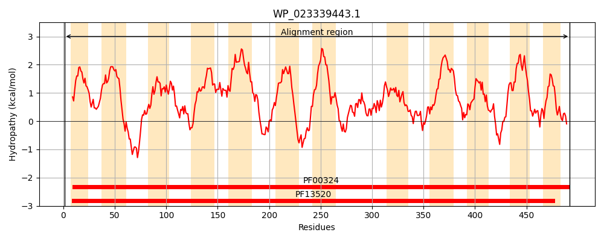
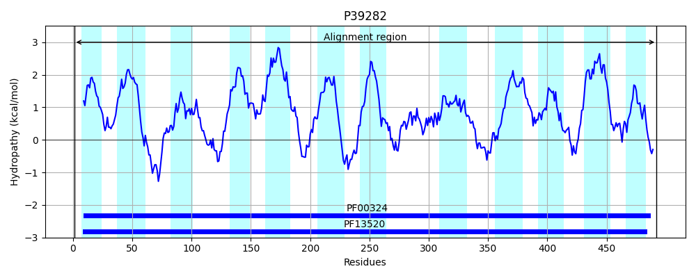
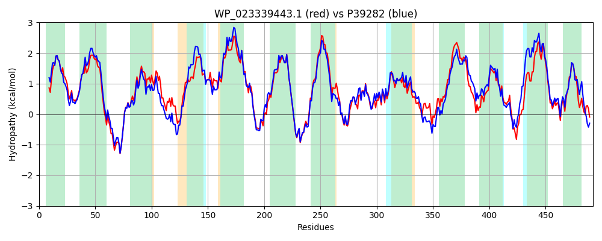

Hit Accession: P39282
Hit TCID: 2.A.3.7.5
Hit Description: gnl|BL_ORD_ID|10251 gnl|TC-DB|P39282|2.A.3.7.5 Inner membrane transporter yjeM OS=Escherichia coli (strain K12) GN=yjeM PE=1 SV=2
Mach Len: 492
e:0.000000
Query TMS Count : 12
Hit TMS Count: 12
TMS-Overlap Score: 12.550000
Predicted Substrates:None
BLAST Alignment:
Score: 2044 , Bit scores: 791 bits, E-value: 0.0e+00, Alignment length: 492, Percentage identity: 79
Query: 1 MHQQFKKMSLIGLILMIFTSVFGFANSPSAFYLMGYSAMPFYLFSALFFFIPFALMMAEMGSAYRREEGGIYSWMNHSVGPRFAFIGTFMWFASYVVWMVSTAAKIWVPLSTFLFGADKTQTWALASLTPTQTVGILAACWMGVVTFIAVKGINKIAKITAVGGIAVMGLNLVLLLVSGAILLLNGGHFVQPLNFTLSPNPGYQSGMAMLSFVVFAIFAYGGIEAVGGLVDKTDKPEKNFAKGIIIAAIVISVGYSLAIVLWGVSANWQQVLGARSTNLGNITYVLMTSLGTTLGQALHLTPESAALTGVWFARITGLSMFLAYTGAFFTLSYSPLKAIIQGTPKALWPSVMTRLNVNGMPAAAMWLQCLLVGVFIVLVSFGGDSASAFYNKLTLMANVSMTLPYLFLTIAFPFFKAKTHLDRPFVIFKNRSSTLLATGVVLLVVTFANIFTIIQPVIDSGDWNSTLWMVGGPIFFSLLALGIYESYRRRMA 492
M KKMSLIGLILMIFTSVFGFANSPSA+YLMGYSA+PFY+FSAL FFIPFALMMAEMG+AYR+EEGGIYSWMN+SVGPRFAFIGTFMWF+SY++WMVST+AK+WVP STFL+G+D TQ W +A L PTQ VG+LA WM +VT +A KGINKIA+ITAVGGIAVM LNLVLLLVS ILLLNGGHF Q +NF SPNPGYQSG+AMLSFVVFAIFAYGGIEAVGGLVDKT+ PEKNFAKGI+ AAIVIS+GYSLAI LWGVS NWQQVL S NLGNITYVLM SLG TLG ALHL+PE++ GVWFARITGLSMFLAYTGAFFTL YSPLKAIIQGTPKALWP MTRLN GMP+ AMW+QC LV VFI+LVSFGG +ASAF+NKLTLMANVSMTLPYLFL +AFPFFKA+ LDRPFVIFK S ++AT VV+LVVTFAN+FTIIQPV+++GDW+STLWM+GGP+FFSLLA+ IY++Y R+A
Sbjct: 1 MPHTIKKMSLIGLILMIFTSVFGFANSPSAYYLMGYSAIPFYIFSALLFFIPFALMMAEMGAAYRKEEGGIYSWMNNSVGPRFAFIGTFMWFSSYIIWMVSTSAKVWVPFSTFLYGSDMTQHWRIAGLEPTQVVGLLAVAWMILVTVVASKGINKIARITAVGGIAVMCLNLVLLLVSITILLLNGGHFAQDINFLASPNPGYQSGLAMLSFVVFAIFAYGGIEAVGGLVDKTENPEKNFAKGIVFAAIVISIGYSLAIFLWGVSTNWQQVLSNGSVNLGNITYVLMKSLGMTLGNALHLSPEASLSLGVWFARITGLSMFLAYTGAFFTLCYSPLKAIIQGTPKALWPEPMTRLNAMGMPSIAMWMQCGLVTVFILLVSFGGGTASAFFNKLTLMANVSMTLPYLFLALAFPFFKARQDLDRPFVIFKTHLSAMIATVVVVLVVTFANVFTIIQPVVEAGDWDSTLWMIGGPVFFSLLAMAIYQNYCSRVA 492 | Protein Hydropathy Plots: |
|---|
|  |  |
Pairwise Alignment-Hydropathy Plot:
|
|---|
|  |